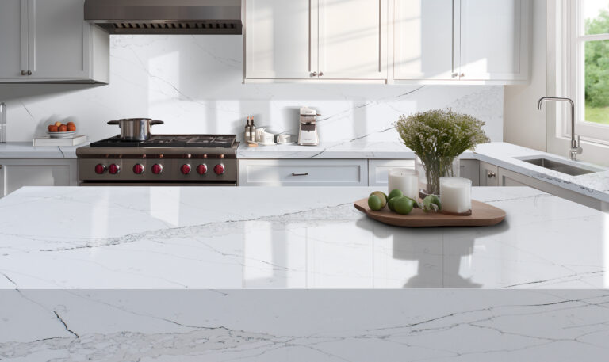
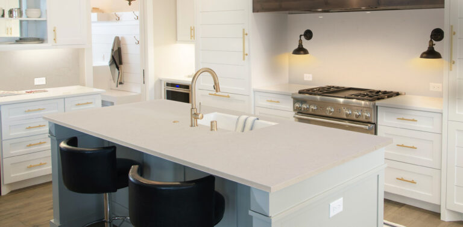
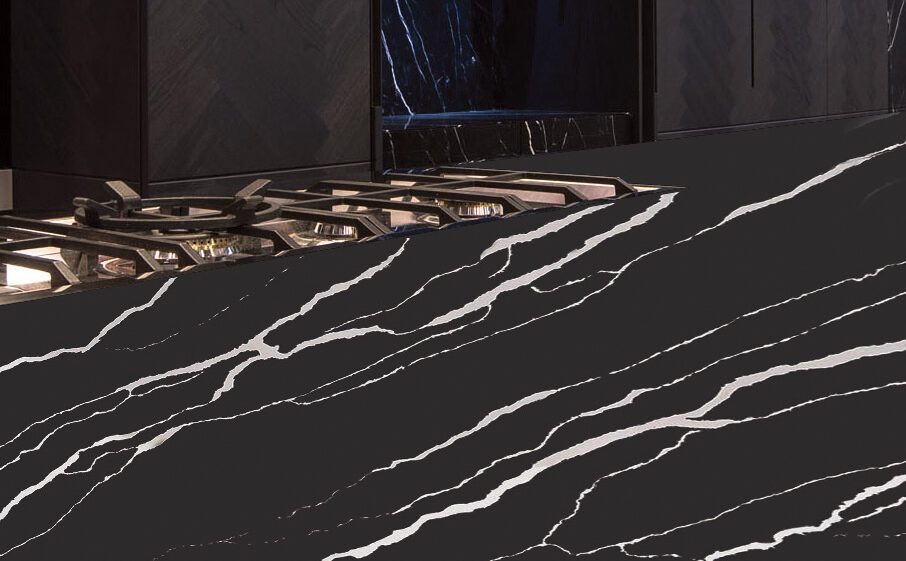
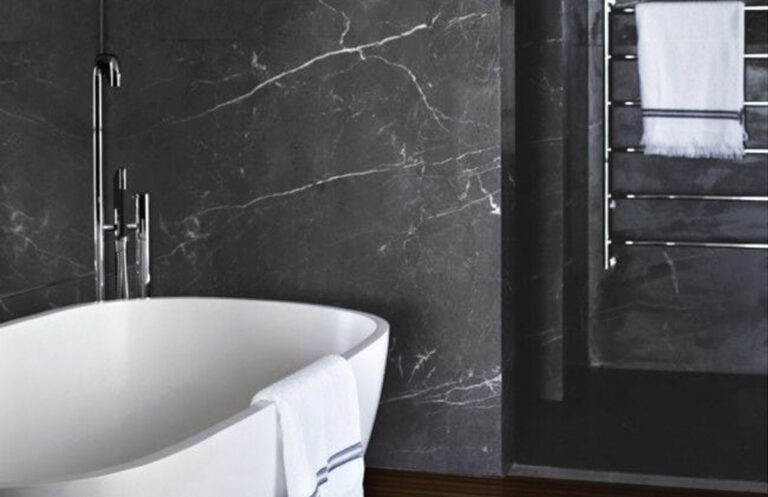

A New Generation Solid Surface
Your Partner… For
Manufacturer Direct
Premium Surfaces
1.1 Million Square Foot Factory / Warehouse. Operating since 1993. Manufacture facility using the finest Italian Technology.
Our Quartz consists of 93 percent quartz, 7 percent resin
8K is a Low Silica Mineral Surface. We bring you the most popular and modern colours and patterns on the market with consistent, ultimate quality.


Our Collections

LUSSO
View Collection →

ULTIMATE
View Collection →

ALLEGRIA
View Collection →

PRIME
View Collection →
ULTIMATE
View Collection →
ALLEGRIA
View Collection →
PRIME
View Collection →
Google Reviews
"Great service! We have made our kitchen countertop with MDP Surfaces this summer. Mena is amazing, she takes time to find the best product for her client and makes sure everyone is satisfied..."
"I have used the services of MDP since way before they were MDP... 8K Ultra HD has been the best. Great consistent quality with the most popular and modern colours."
"As a rapidly growing business, our company has always sought out the best solutions for our office kitchen space to ensure that they not only serve their functional purposes but also exude professionalism..."
"They just did my mom's counter tops. Looks absolutely stunning !!! There was constantly communication between us and they accommodated all our specific requests. 5/5 recommend."
"Attention to detail, quality of the countertops and regular following up on delivery and installation. What more can I ask for?!? Thank you so much for such a great and seamless experience."
"Excellent service. Mena opened her warehouse to us on a Saturday to accommodate us. She gave us excellent advice senza aucune pression de vente. Very competitive prices. We recommend MDP Surfaces without hesitation."
"As a cabinet maker I recommend MDP surfaces to all my clients. Great product with at a great price point and working with MENA is an absolute pleasure."
"The product is durable and amazing. They did my Kitchen countertops and my backsplash in QUARTZ. Very good quality, as well the service was amazing. Thank you MDP & Mena."
LUSSO COLLECTION
8K is a Low Silica Mineral Surface. Natural characteristics in quartz may cause slight colour variation.
ULTIMATE COLLECTION
8K is a Low Silica Mineral Surface. Featuring the New Colours of 2024.
ALLEGRIA COLLECTION
8K is a Low Silica Mineral Surface. Discover elegant aesthetics.
PRIME COLLECTION
8K is a Low Silica Mineral Surface. Pure and uniform patterns.
CTS Solution
The blueprint cut-to-size solution for fabricated quartz, granite and marble surfaces. We are your trusted partner.
WE OFFER YOU:
- All manufacturing, quality control, logistics and coordination.
- Quality assured, fast turnaround, less waste, no offcuts.
- Color and pattern matched quartz, full format slabs.
- Most selections of granite and marble are available.
- Aggressively priced, enabling larger projects profitably.
- Reduced wear and tear on your machinery and tooling.
- 10 Year Commercial Warranty (material only).
VALUE ADDED ADVANTAGES:
- Ideal for high-rises and multi-family units.
- Ability to explore multiple solutions.
- Facilitation of commercial project management.
- Manufactured and engineered with efficiency.
5 EASY STEPS:
We review and quote from your shop drawings
Control samples sent for your approval
Final details confirmed (Sink placement, edges)
You sign-off on drawings with PO & 50% deposit
Final production of your project
Gallery
See our stunning surfaces in action.


FAQ
Frequently Asked Questions about our Quartz surfaces.
Can hot plates and pans be placed directly on quartz?
Although quartz carries a high resistance to heat, please always use hot pads or trivets. Prolonged exposure to heat will damage quartz, and such damage is not covered by warranty.
Do I need to finish or seal quartz?
No. Unlike natural stone products, quartz is a non-porous surface. You will NEVER have to apply a sealer to our surface.
How is quartz installed?
Quartz is installed by trained and certified fabricators/installers. Using a certified fabricator/installer ensures that it is installed properly and under full warranty.
Can quartz be stained?
Yes. Although quartz is non-porous and never needs to be sealed, surface staining can occur. To avoid staining, it’s best to wipe up spills in a timely manner. By following our care & maintenance guide most surface stains can be easily removed.
How do I care for quartz?
Quartz needs very simple care – soap and water and a soft cloth to dry. Check out our Care & Maintenance Guide in the Resources section for more information.
Can quartz be used for fireplace cladding or as a cooktop backsplash?
We do not recommend these types of applications as prolonged exposure to high heat may cause discolouration, warping, or cracking. These instances will not be covered under warranty.
Where can quartz be applied?
Quartz can be used in a number of design applications, such as kitchen countertops, benches, islands, peninsulas; bathroom vanities, shower walls, bath and tub surrounds; table tops, furniture, window sills, wall coverings and thresholds, etc. Commercial uses such as healthcare facilities, restaurants, offices; including conference tables, reception and desktops, countertops and credenzas, lobby/interior walls, food preparation areas, laboratories, and inlays.
Will the small piece of sample I have match my countertop once it's installed?
The smaller samples are cut from large quartz slabs and only represent a limited portion of the actual stone. Please refer to samples only as a general indication of a particular colour’s design pattern, aesthetics, and hue. Samples are not guaranteed to be an exact replica of the slabs and may vary from the actual, installed surface.
Is quartz consistent in colour?
Our product is made from pure, natural quartz. Although quartz colours may be more consistent than marble or granite, variation in colour, shape, shade, pattern and size are inherent traits of quartz. In addition, the random distribution of particulates are an inherent part of overall design and composition and are not considered to be defects or product non-conformity.
What are the advantages of quartz?
Quartz is nonporous preventing unwelcome germs, bacteria and mildew. Sealing is not required. With proper care & maintenance, it is the natural choice.
What is natural quartz?
Quartz is one of the hardest components of natural granite. Quartz rates seven out of 10 on Mohs Scale of Hardness. The only material harder are diamonds, sapphires and topaz. The quartz crystals are used to create a beautiful and strong surface that is highly scratch and impact resistant.
Resources
Guides, forms, and insights for your premium surfaces.
About Us
Learn about our 1.1 million sqft manufacturing facility.
Articles & Insights
Read our latest industry news and design tips.
Care & Maintenance
Detailed guides on how to keep your surfaces pristine.
Downloads & Forms
Access warranties, waivers, and product brochures.
About Us
The leader in quartz technology and manufacturing.
MDP Surfaces, which stands for Manufacturer Direct Premium, operates with a philosophy that is refreshingly straightforward: eliminate the middleman to provide high-end products at competitive prices. This isn't just a marketing slogan; it’s a business model built on over 30 years of industry experience.
While the company has a massive global footprint — including a breathtaking 1.1-million-square-foot manufacturing facility operating since 1993 — our warehouses maintain the feel of a local, close-knit partner dedicated to the community.
Utilizing advanced Italian technology, our signature 8K Ultra HD Quartz was developed specifically to bridge the gap between the durability of engineered stone and the aesthetic soul of natural marble. The resulting slabs feature vivid, pure patterns with a level of lustre and depth that traditional quartz often lacks.




Articles & Insights
Read our latest industry news and design tips.
Care & Maintenance
Detailed guides on how to keep your surfaces pristine.
Daily Cleaning
For everyday maintenance, simply use a soft cloth or sponge with warm water and a mild dish soap. Wipe the surface clean and dry it thoroughly with a clean cloth to prevent water spots.
Stubborn Stains
For dried spills or heavy stains, apply a non-abrasive cleaner (like Soft Scrub Liquid Gel). Gently rub with a non-scratch pad, rinse generously with warm water, and dry completely.
What to Avoid
Avoid exposing your quartz to strong chemicals, solvents, bleach, or highly alkaline cleaners (pH > 10). If accidental exposure occurs, immediately flush the area with water.
Heat & Scratches
While highly scratch and heat resistant, quartz is not indestructible. Always use a trivet or hot pad under hot pans, and never cut directly on the surface without a cutting board.
Downloads & Forms
Access warranties, waivers, and product brochures.
Contact Us TODAY!
Get in touch, we're here to help! Send us a message.
Hours
Warehouse: Monday to Friday: 9:00am - 4:00pm
Office: By Appointment Only.
Slab Viewing Appointments
For slab viewing, please select 'Slab Viewing' in the contact form to book an appointment.